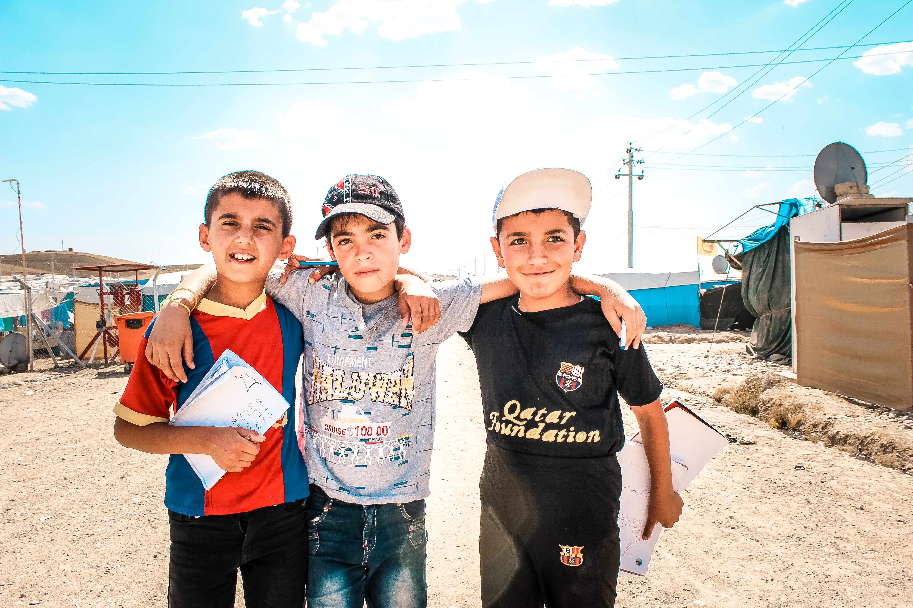

Comemorando a Resiliência e a Solidariedade:
Dia do Refugiado destaca a busca por um mundo acolhedor e justo
O Dia Mundial do Refugiado, celebrado em 20 de junho,
é uma data de extrema importância que busca aumentar a conscientização e o entendimento sobre a situação dos refugiados em todo o mundo.
A data foi estabelecida pela Assembleia Geral das Nações Unidas para destacar a coragem, a resiliência e as contribuições dos refugiados, além de buscar solidariedade e apoio àqueles que foram forçados a deixar suas casas devido a conflitos, perseguições ou violações dos direitos humanos.
O Dia do Refugiado é uma oportunidade para refletir sobre os desafios enfrentados por milhões de pessoas que buscam proteção e refúgio em outros países. Os refugiados enfrentam condições extremamente difíceis e incertas, muitas vezes deixando tudo para trás em busca de segurança e esperança.
É uma ocasião para reconhecer sua coragem e ressaltar a importância de proteger seus direitos fundamentais, oferecer-lhes apoio e criar condições para sua integração adequada nas comunidades de acolhimento.
Além disso, o Dia do Refugiado também é uma oportunidade para destacar a generosidade e a solidariedade de países, organizações e indivíduos que trabalham incansavelmente para ajudar e apoiar os refugiados. É um momento para reconhecer a importância da cooperação internacional e da construção de parcerias para enfrentar os desafios globais relacionados aos refugiados.

Nesta data, são organizados eventos em todo o mundo, como palestras, exposições, campanhas de conscientização e atividades culturais, para dar voz aos refugiados, compartilhar suas histórias e promover a empatia e o entendimento.
Essas iniciativas buscam criar espaços de diálogo e sensibilização, desafiando estereótipos negativos e promovendo a inclusão e a aceitação de refugiados em suas novas comunidades.
É fundamental lembrar que os refugiados têm direitos reconhecidos internacionalmente, como o direito à vida, à liberdade, à segurança pessoal e à proteção contra a discriminação. O Dia do Refugiado é uma oportunidade para lembrar os governos e as sociedades de sua responsabilidade de garantir o respeito e a proteção desses direitos, além de promover soluções duradouras para a situação dos refugiados, como o reassentamento, a integração local e o retorno voluntário em condições seguras. Em resumo, o Dia Mundial do Refugiado é um momento de solidariedade, compreensão e ação em prol dos refugiados. É uma oportunidade para aumentar a conscientização sobre suas histórias, necessidades e contribuições, enquanto trabalhamos coletivamente para construir um mundo mais justo, inclusivo e acolhedor para todos.